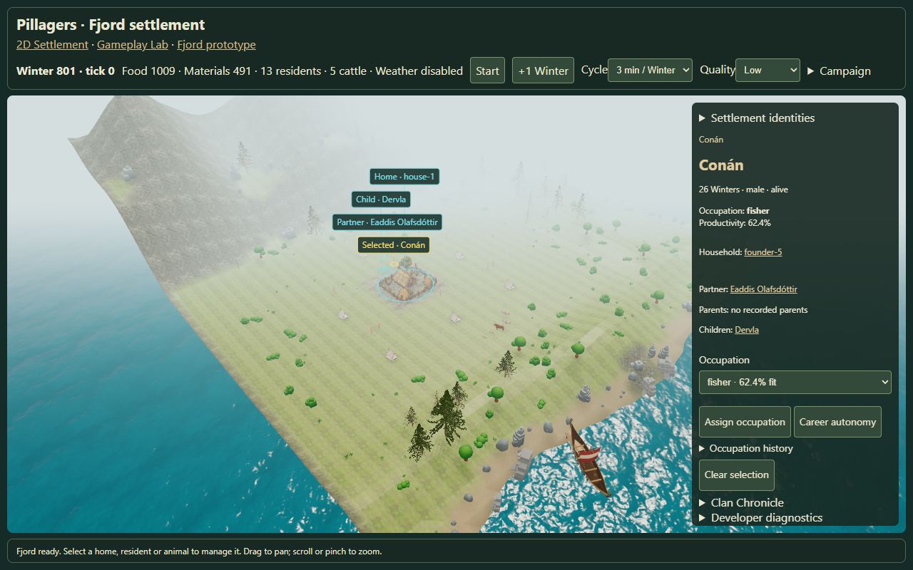
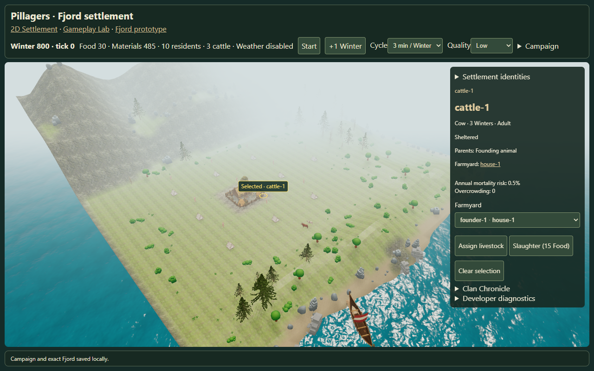
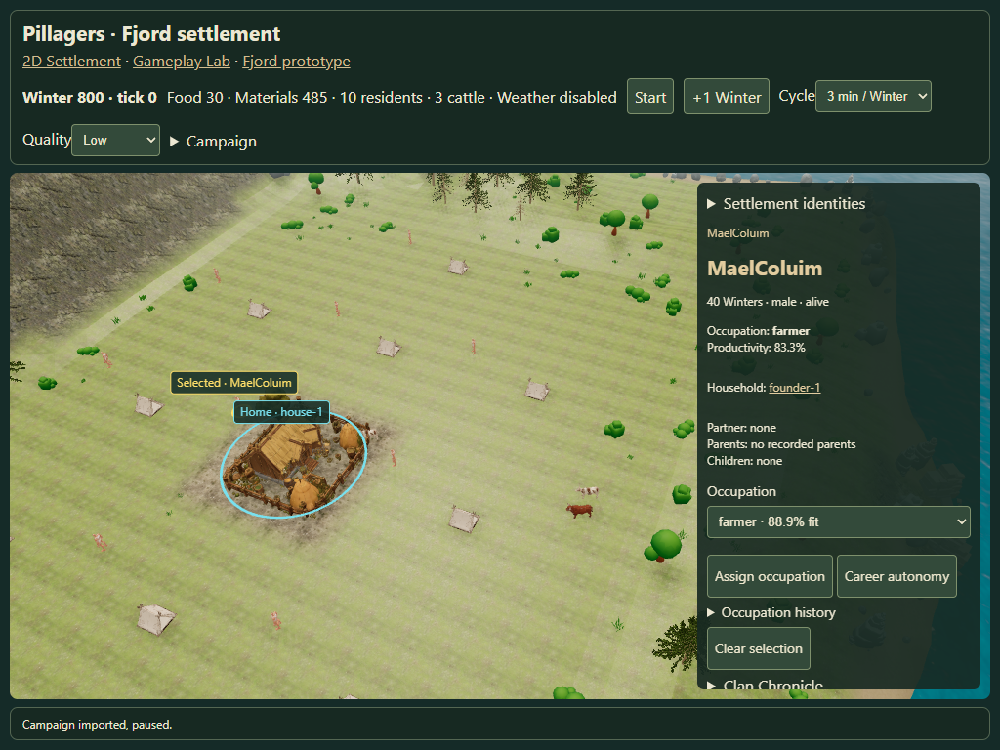

Interactive Fjord settlement
Gold marks the selected object. Cyan marks its visible family and home, or the residents of a selected home. English labels use leader lines and avoid overlap.
QA report · Browser results · Open 3D Fjord

Resident and family selection, with separated labels and model anchors.

Real model picking and canonical livestock assignment.

Chromium touch emulation at 1024 × 768. Physical iPad Safari remains untested.